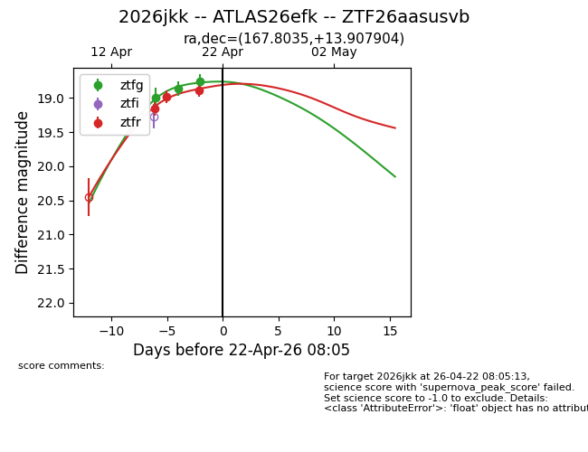
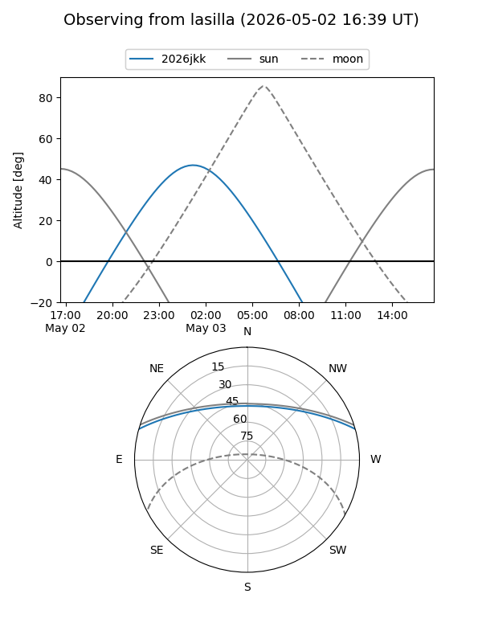
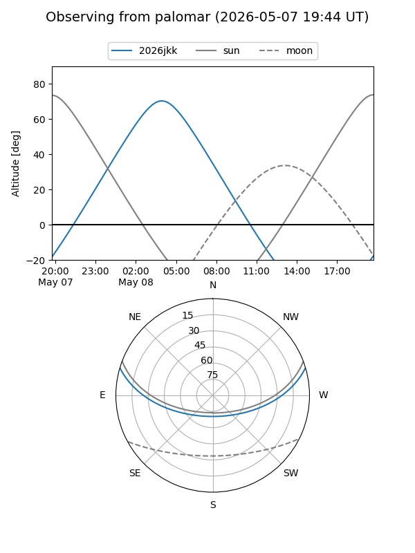
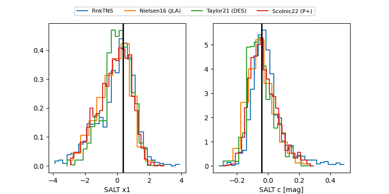

2026jkk
Target 2026jkk at 2026-04-22 08:09
Aliases and brokers:
FINK: link
Lasair: link
ALeRCE: link
TNS: link
YSE: link
alt names
ZTF26aasusvb (ztf,fink_ztf)
2026jkk (tns,yse)
ATLAS26efk (atlas)
Coordinates:
equatorial (ra, dec) = 167.8035,+13.90790
equatorial (HMS+DMS) = 11:11:12.83,+13:54:28.45
galactic (l, b) = (237.3973,+63.15103)
Flags:
Photometry:
last ztfg=18.76, ztfr=18.88
3 ztfg, 3 ztfr detections
Lightcurve

Visibility


Additional plots
